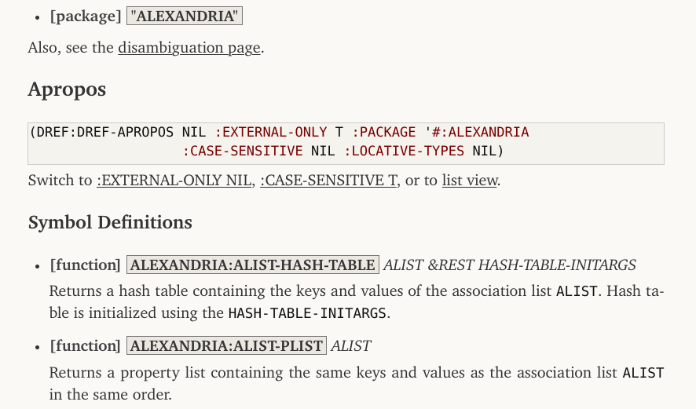

DRef and PAX v0.3
Tags: tech, lisp, Date: 2023-07-26
DEFSECTION needs to refer to definitions that do not create a
first-class object (e.g. stuff like (*DOCUMENT-LINK-TO-HYPERSPEC*
VARIABLE)), and since its original release in 2014, a substantial
part of
PAX dealt
with locatives and references, which reify definitions. This release
finally factors that code out into a library called
DRef,
allowing PAX to focus on documentation. Being very young, DRef lives
under adult supervision, in a
subdirectory
of the PAX repository.
DREF> (definitions 'pax:document-object*)
(#<DREF DOCUMENT-OBJECT* GENERIC-FUNCTION>
#<DREF DOCUMENT-OBJECT* (METHOD NIL (MGL-PAX-BLOG::CATEGORY T))>
#<DREF DOCUMENT-OBJECT* (METHOD NIL (UNKNOWN-DREF T))>
#<DREF DOCUMENT-OBJECT* (METHOD NIL (MGL-PAX::CLHS-DREF T))>
#<DREF DOCUMENT-OBJECT* (METHOD NIL (MGL-PAX::INCLUDE-DREF T))>
#<DREF DOCUMENT-OBJECT* (METHOD NIL (MGL-PAX::GO-DREF T))>
#<DREF DOCUMENT-OBJECT* (METHOD NIL (GLOSSARY-TERM T))>
#<DREF DOCUMENT-OBJECT* (METHOD NIL (SECTION T))>
#<DREF DOCUMENT-OBJECT* (METHOD NIL (ASDF-SYSTEM-DREF T))>
#<DREF DOCUMENT-OBJECT* (METHOD NIL (CLASS-DREF T))>
#<DREF DOCUMENT-OBJECT* (METHOD NIL (STRUCTURE-ACCESSOR-DREF T))>
#<DREF DOCUMENT-OBJECT* (METHOD NIL (WRITER-DREF T))>
#<DREF DOCUMENT-OBJECT* (METHOD NIL (READER-DREF T))>
#<DREF DOCUMENT-OBJECT* (METHOD NIL (ACCESSOR-DREF T))>
#<DREF DOCUMENT-OBJECT* (METHOD NIL (METHOD-DREF T))>
#<DREF DOCUMENT-OBJECT* (METHOD NIL (SETF-DREF T))>
#<DREF DOCUMENT-OBJECT* (METHOD NIL (VARIABLE-DREF T))>
#<DREF DOCUMENT-OBJECT* (METHOD NIL (DREF T))>
#<DREF DOCUMENT-OBJECT* (METHOD NIL (T T))>)
DREF> (dref 'pax:document-object* '(method nil (class-dref t)))
#<DREF DOCUMENT-OBJECT* (METHOD NIL (CLASS-DREF T))>
DREF> (arglist *)
(DREF STREAM)
:ORDINARY
DREF> (docstring **)
"For definitions with a CLASS locative, the arglist printed is the
list of immediate superclasses with STANDARD-OBJECT, CONDITION and
non-exported symbols omitted."
DREF> (pax:document ***)
- [method] DOCUMENT-OBJECT* (DREF CLASS-DREF) STREAM
For definitions with a CLASS locative, the arglist printed is the
list of immediate superclasses with STANDARD-OBJECT, CONDITION and
non-exported symbols omitted.During the refactoring, the references API was cleaned up. How to write extensions has seen lots of changes (see Extending DRef and Extending PAX), but normal use is the same. DRef is similar to Shinmera's Definitions library but is more tailored to the needs of PAX.
Also in this release:
Apropos got a detailed view feature, which includes the docstrings of all listed definitions not just the reference itself. This is very useful for getting an overview of a package.

The detailed view often has to render docstrings which have not been written with PAX in mind and are not proper markdown. These docstrings are now sanitized aggressively in a unavoidably heuristic manner.
There are now two supported CSS styles for HTML output:
:DEFAULTwithsans-serifand:CHARTERwith Charter as the main font (which is bundled). The:CHARTERstyle is used in the linked PAX World documentation on this blog. See PAX:*BROWSE-HTML-STYLE* and PAX:UPDATE-ASDF-SYSTEM-HTML-DOCS.As usual, quite a few bug fixes and some optimizations also found their way into this release.